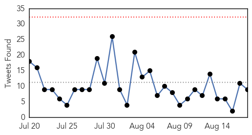

Ebola
30-Day Web Trend
1 alerts, 0 warnings

30-Day Twitter Trend
0 alerts, 0 warnings

Article Locations

Article Confidences

Top Articles:
- 0.999
- Last Ebola virus transmission chain announced in Sierra Leone
- 0.998
- Quick, Paper-Based Ebola Test May Help in Remote Areas
- 0.995
- American aid worker stricken with Ebola being treated in US
- 0.994
- Ebola threatens pregnant women - News
- 0.987
- WFP brings critical food relief after Ebola outbreak
- 0.987
- Ebola scares off trainee nurses in Liberia
- 0.987
- Liberia: Ebola-free countdown reaches 35 days
- 0.973
- "We can be proud that the international community rallied to support the efforts to defeat Ebola."
- 0.972
- More Autoclaves to be Installed at Health Facilities - Liberia
- 0.927
- Tackle Nepal’s typhoid problem now
- 0.916
- Remembering Ameyo Adadevoh
- 0.825
- 2-Day Post Ebola Strategy Summit for Sierra Leone ended in Texas
- 0.711
- Strengthening Food Security-Agriculture Trains Stakeholders
- 0.707
- Despite Ebola Crisis, Sierra Leone Priest Speaks of Hope and Peace
- 0.680
- Recognising those facing danger to help others
- 0.647
- Call to protect health workers in conflict zones
- 0.647
- Fitzgibbon Pays Farewell Call on President Koroma
- 0.635
- Fitzgibbon Pays Farewell Call on President Koroma
- 0.593
- Jennifer Doudna Made Editing DNA as Easy as Cut and Paste
- 0.515
- Disease Detective: Shutesbury native heads to the Congo to study epidemics
Top Tweets:
- 0.849
- As Sierra Leone's Ebola Crisis Ebbs There's a New Crisis: Food Insecurity - TakePart http://t.co/hpPCfAmktb ebola EVD
- 0.849
- As Sierra Leone's Ebola Crisis Ebbs There's a New Crisis: Food Insecurity - TakePart http://t.co/hpGbh3qQ7A ebola EVD
- 0.834
- Africa's Ebola epidemic isn't over yet - Waterloo Record http://t.co/15b7FTmse0 ebola EVD
- 0.771
- Ebola Scares Off Trainee Nurses in Liberia - Irin http://t.co/dSl3QEChNW ebola EVD
- 0.749
- Breakthrough Ebola Vaccine Provides Hope for West Africa - DOGOnews http://t.co/Rvs3WyOlZp ebola EVD
- 0.702
- RT: .@NHA_EPNEWS RT AFD Blog `MJA: Ethical Considerations In Management Of Ebola Virus Disease’ preparedness http:/…
- 0.585
- RML researchers make strides towards Ebola vaccine - Bitterroot Star http://t.co/y0e2rqoXSR ebola EVD
- 0.568
- Quick paper-based Ebola test may help in remote areas - WBXH http://t.co/NRKDvwbVbx ebola EVD
- 0.544
- RT: Sierra Leone has first week of no new Ebola cases...a first since the start of the outbreak http://t.co/6PJVLMUiGz http:/…
Unknown
30-Day Web Trend
0 alerts, 0 warnings

30-Day Twitter Trend
1 alerts, 0 warnings

Article Locations

Article Confidences

Top Articles:
- 0.989
- The Doctor Is In: Legionnaires' outbreak must be contained
- 0.959
- Canadian Cyclospora Numbers Rise to 87
- 0.950
- All tests negative for MERS in Opelika hospital patient
- 0.920
- Plague in squirrels prompts closure of popular Yosemite National Park campground
- 0.917
- Chicago Tribune
- 0.917
- Chicago Tribune
- 0.917
- Chicago Tribune
- 0.917
- Chicago Tribune
- 0.917
- Chicago Tribune
- 0.917
- Chicago Tribune
- 0.917
- Chicago Tribune
- 0.917
- Chicago Tribune
- 0.917
- Chicago Tribune
- 0.914
- Tuberculosis Outbreaks – Is Enough Being Done?
- 0.902
- Proof that Morgellons Disease is a Physical Illness – It isn’t “All in your head”
- 0.893
- Two wait on test results after Monywa H5N1 outbreak
- 0.858
- Weekly Overview: Latvia Reports 53 New Outbreaks of African Swine Fever
- 0.848
- CORRECTED-Pakistan, Afghanistan must step up fight against polio - WHO
- 0.834
- Healing the Sickest Patients: How 'Hot Spotters,' 'Frequent Fliers,' and 'Super-Utilizers' Impact Health Care in America
- 0.821
- Adding fluoride to tap water could halve children's tooth extractions, says study
- 0.816
- Yosemite Works to Rid Campsites of Plague After Camper Infected
- 0.792
- More nurses diagnosed with tuberculosis at Portimão Hospital
- 0.763
- Canadian Cyclospora Cases Now at 87
- 0.738
- Floods cause clean water shortages across Burma
- 0.731
- Rabies-infected bat found in Naperville
- 0.729
- Debate brews over Health Ministry overhaul
- 0.721
- How DNA detectives are helping solve the rise of superbugs
- 0.716
- Floods Cause Acute Water Shortages in Hundreds of Villages
- 0.705
- Third case of meningococcal ruled out in Hunter New England region
- 0.680
- Shawano County has confirmed case of tuberculosis
- 0.677
- Worker who eluded Charlie Hebdo killers sues French TV
- 0.677
- French pork farmers ask govt to save their bacon
- 0.677
- ‘Defeating IS takes priority over Assad’ in new Syria plan
- 0.674
- Thai police hunt bombing suspect caught on CCTV
- 0.667
- Free Legionella Pocket Guide & Webinar Offered by EMSL Analytical, Inc.
- 0.660
- Water Line Break Causes Boil-Water Advisory in Harmontown
- 0.656
- Use of contact precautions should be customized based on local needs and resources
- 0.655
- Massachusetts health officials say MRSA cases at Westfield youth center no public health threat
- 0.653
- Deadly 'brain-eating' amoeba found in Louisiana water system
- 0.648
- Unmet teen healthcare needs cause problems as adults
- 0.644
- Unmet teen healthcare needs cause problems as adults
- 0.613
- Ways to avoid eye infection during monsoons
- 0.609
- Time for a counterattack on superbugs that kill thousands
- 0.604
- Blocked adoptions in DR Congo: ‘It’s like our children are in prison’
- 0.600
- Northwest Ohio hospitals among best, worst for infection control
- 0.592
- Lyme disease still stuck in controversy, but research making strides
- 0.583
- Taitung authorities express concerns over spread of rabies
- 0.580
- Germs and infections to prepare for as kids head back to school
- 0.576
- NHS could save millions in tooth extractions by putting fluoride in the water
- 0.572
- Blue-Green Algae Bloom Found in Warwick Pond
Showing top 50 articles...
Top Tweets:
- 0.594
- Saudi Arabia has a large MERS outbreak underway in Riyadh. 10 cases announced today 9 y'day. Total reported so far: 63 since late July 1/2
- 0.591
- RT: Expecting mamas need their flu shots! protectingfortwo: Absolutely! Very important with flu season approachi…
- 0.570
- So far only a few of the reported Riyadh MERS cases have been healthcare workers. But this is a hospital outbreak; that will likely change.
- 0.529
- .@PrayerPeace Hasn't been confirmed ongoing community spread so far with MERS. Some household clusters. Mostly hosp outbreaks
- 0.512
- “The flu vaccine needs to change every year because the virus is constantly mutating.”http://t.co/PNJkAJRWJO